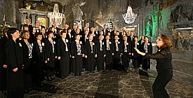
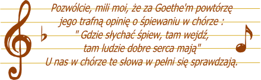

Witamy na stronach Cameraty
Słuchajcie! Słuchajcie! Mamy amatorski chór mieszany i to jest bardzo fajna sprawa. Zaczynaliśmy, jako 16-osobowa grupa miłośników pięknego śpiewu, a teraz jest nas ponad 50 zapalonych chórzystów.
Śpiewamy razem od 1997 roku, w roku 2022 będziemy obchodzić jubileusz 25-lecia, i ciągle przychodzą nowi ludzie - nie przeraża ich ilość materiału, którą muszą opanować, a lekko nie jest ;). Ciągle ćwiczymy nowe utwory, o starych nasza Pani Dyrygent też nie pozwala zapomnieć.
Jak śpiewamy? Tego się przecież nie da opisać. Kilku utworów można posłuchać tutaj, ale najlepiej przyjść na koncert albo ... zaśpiewać z nami. Poznaj naszą piosenkę.
© Stowarzyszenie Muzyczne Chór Camerata Wieliczka
Projekt i wykonanie:  Prowadzenie strony: Małgorzata Wysocka-Cebula
Prowadzenie strony: Małgorzata Wysocka-Cebula